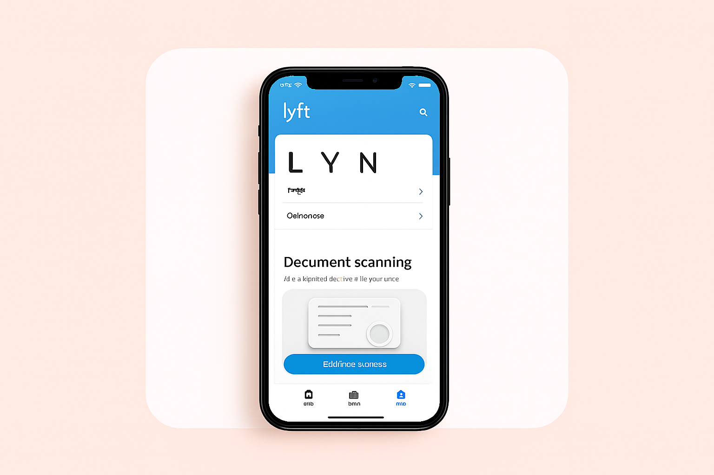

PRODUCT DESIGN INTERN • SUMMER 2020
Enhancing Trust & Safety in the Lyft Experience
Worked within the Pay, Identity, and Integrity team to design intuitive interfaces that prioritize safety and reliability for millions of riders and drivers.

The Context
Trust is the currency of the sharing economy. For Lyft, ensuring that both riders and drivers feel safe and secure during every transaction and interaction is paramount. My internship focused on identifying friction points in the identity verification process and redesigning the flow to be more transparent and less intrusive.
The Problem
"How might we increase the completion rate of driver identity verification without compromising the perceived speed of onboarding?"
🚨High drop off rates during document upload steps. 🚨Verification process perceived as "too lengthy" by new applicants.
The Process
1. Research & audit
Analyzing existing flows and competitor benchmarks to find
usability gaps.
Synthesizing user feedback from support tickets.
2. Iterative Design
Exploring multiple interaction patterns to simplify document
scanning.
Final Solution
The redesigned flow introduced real-time feedback during document scanning and clarified the "why" behind sensitive data requests.
Smart Scanning
Auto-capture functionality reduces user error by 40%.
Clear Progression
New stepper component manages expectations on time-to-completion.
Key Outcomes